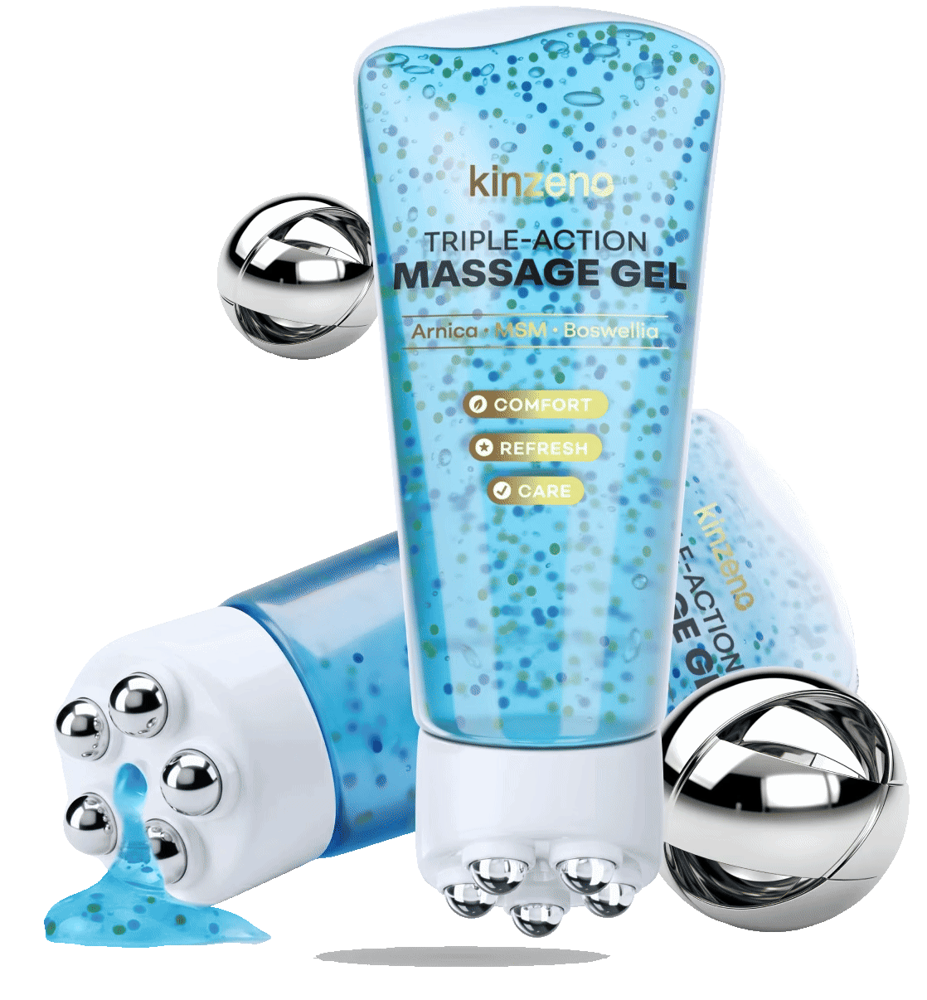
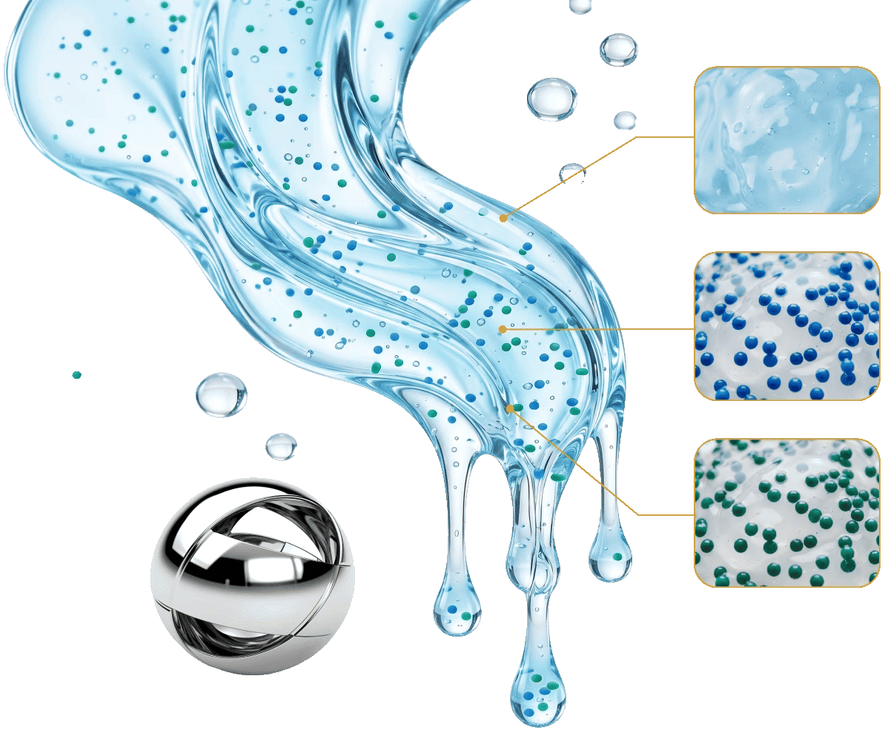
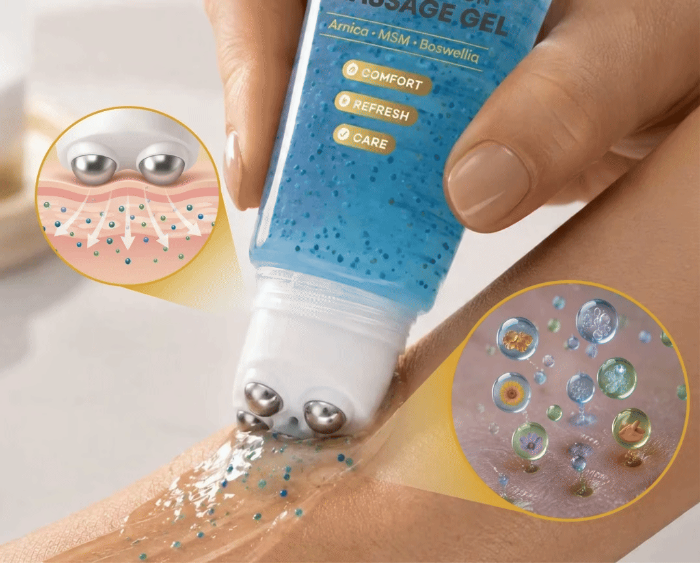

Budzisz się rano i czujesz to: kolano, które kiedyś nawet nie
zwracało na siebie uwagi, teraz domaga się Twojej uwagi przy każdym
kroku. Plecy, które jeszcze 5 lat temu były elastyczne, dzisiaj
przypominają zardzewiały zawias.
Wiesz, co jest najgorsze? Że większość osób po prostu to
ignoruje. Bierze tabletkę i idzie dalej. Aż pewnego dnia tabletka
przestaje działać. A wtedy zaczyna się prawdziwy problem.
Zanim do tego dojdzie, przeczytaj ten artykuł. Odpowiadamy na trzy
pytania, które dostajemy najczęściej:
- «Co mam wyrzucić z talerza, żeby moje ciało przestało protestować?»
- «Co na to lekarze i fizjoterapeuci?»
- «Czy jest coś, co mogę zrobić sam, w domu, w 3 minuty dziennie?»
«Większość osób po czterdziestce nie ma problemu ze stawami. Ma
problem z nawykami. I to są nawyki, które da się zmienić.»
Redakcja Codzienny Komfort
«Pytanie 1: Co musisz wyrzucić z talerza?»
5 grup produktów, które dietetycy wymieniają zawsze, gdy mowa o
dyskomforcie ciała po 45. roku życia
Zacznijmy od bolesnej prawdy: większości z nas nikt nigdy nie
powiedział, że to, co jemy codziennie, może mieć bezpośredni wpływ
na to, jak czujemy się rano wstając z łóżka. Nie chodzi o
cudowne diety. Chodzi o 5 grup produktów, które większość z nas je
codziennie, nawet o tym nie myśląc:
- Cukier i słodzone napoje. Sok pomarańczowy, cola, słodka
kawa. Nadmiar cukru to jeden z pierwszych czynników, które
specjaliści każą ograniczyć.
- Przetworzona żywność. Gotowe dania z mikrofalówki, chipsy,
wędliny, fast food. Długi skład i dużo soli, codziennie.
- Sól. Nie tylko solone potrawy. Pieczywo, sery, sosy, ketchup.
Sól jest wszędzie, a większości ludzi nawet nie wie, ile jej
spożywa.
- Smażone i bardzo tłuste potrawy. Frytki, kotlety, panierki.
Zamienić na gotowanie i duszenie.
- Alkohol. Tu nie ma dyskusji: im mniej, tym lepiej.
Przeczytaj te listę jeszcze raz. Ile z tych 5 grup
produktów zjadałeś dzisiaj? Wczoraj? W zeszłym tygodniu? To jest
właśnie ten moment, w którym większość ludzi odkłada artykuł
i mówi «zaraz zmienię». I nigdy nie zmienia.
Powyższe informacje mają charakter ogólny i edukacyjny. Nie są
zaleceniem dietetycznym ani terapeutycznym. Jeśli odczuwasz
dolegliwości, skonsultuj się z lekarzem. Żadna zmiana w diecie
nie zastąpi diagnozy specjalisty.
«Pytanie 2: Co mówią lekarze i fizjoterapeuci?»
Trzy zdania, które powtarzają się w gabinetach w całej Polsce,
a których prawie nikt nie stosuje
Nie powołujemy się na żadnego konkretnego lekarza, bo nie musimy.
Te trzy zasady powtarza każdy specjalista, od Gdańska po Kraków.
Problem polega na tym, ze 90% osób ich nie stosuje:
1. Ruszaj się codziennie. Nie chodzi o siłownię. Spacer,
rower, rozciąganie. 20 minut dziennie. Tyle wystarczy. Ale
większość osób nie robi nawet tego.
2. Zmień codzienne nawyki. Więcej wody. Mniej cukru. Więcej
snu. Mniejsza masa ciała. Każdy o tym wie. Prawie nikt tego nie
robi.
3. Nie ignoruj sygnałów ciała.
Sztywność poranna, ból przy schodzeniu po
schodach, trzeszczenie w kolanach. To nie są «normalne oznaki
starzenia się». To sygnał, że pora działać. Jeśli się utrzymuje,
idź do lekarza. Żaden kosmetyk ani rytuał nie zastąpi wizyty u
specjalisty.

Brzmi prosto? Bo jest proste. Problem w tym, że większość osób
traktuje te rady jak tekst na opakowaniu: czyta, kiwa głową i
zapomina. Dlatego tak dobrze przyjmują się rytuały, które są
krótkie, łatwe i przyjemne. Takie, które wpisują się w dzień
jak poranna kawa.
Jednym z takich rytuałów jest domowy masaż. Nie mowa o
godzinnym zabiegu. Mowa o 2-3 minutach, rano i wieczorem, z
produktem, który zamienia te 3 minuty w coś, co naprawdę chce
się powtarzać.
«Pytanie 3: Czy jest coś, co mogę zrobić SAM, w domu, w 3 minuty?»
Odpowiedź, która zaskoczyła nawet naszą redakcję
Kiedy zadaliśmy to pytanie naszym czytelnikom, jedno słowo
powtarzało się częściej niż wszystkie inne: Kinzeno.
Postanowiliśmy sprawdzić, dlaczego. Zamówiliśmy produkt. Przetestowaliśmy
go. Przeczytaliśmy skład. I teraz rozumiemy, dlaczego ludzie o tym
mówią.
Kinzeno to
kosmetyczny żel do masażu z aplikatorem rolkowym. Zamiast
rozsmarowywać krem dłonią (tak jak robisz to od lat, po 2 sekundy,
byle jak), przesuwasz po skórze rolkę z pięcioma magnetycznymi
kulkami, które odwzorowują nacisk punktowy znany z japońskiej
techniki shiatsu. Każde nałożenie zamienia się w krótki masaż.
I to zmienia wszystko.

Co wyróżnia Kinzeno na tle zwykłych kremów?
Co jest w środku?
Najważniejsze składniki według producenta:
-
Arnika
Roślina od dawna obecna w kosmetykach do masażu.
-
Boswellia
Żywica, tradycyjnie stosowana w pielęgnacji ciała.
-
Kurkuma
Znana przyprawa, często wykorzystywana w kosmetykach roślinnych.
-
Imbir
Składnik dający charakterystyczne, rozgrzewające uczucie.
-
MSM
Związek siarki, spotykany w kosmetykach do pielęgnacji ciała.
-
Mentol
Daje przyjemne uczucie chłodzenia na skórze.
-
+ ponad 20 dodatkowych składników
Między innymi żeń-szeń, moringa, magnez, alantoina, witamina E,
betaina, inozytol i witamina B5.
Pełny skład znajdziesz na opakowaniu oraz na stronie sprzedawcy.

Lekka żelowa konsystencja ułatwia równomierne rozprowadzenie
składników podczas masażu i nie pozostawia tłustej warstwy.
Pierwszy tydzień: plan, który już dzisiaj możesz zacząć
Dlaczego większość dobrych postanowień upada po kilku dniach?
Bo wymagają zbyt wiele czasu i wysiłku. Właśnie dlatego
rytuał, który trwa 2-3 minuty rano i wieczorem, ma realną szansę
przetrwać dłużej niż pierwszy entuzjazm. Oto jak wyglądają pierwsze
7 dni z Kinzeno:
Plan na pierwsze 7 dni z «Kinzeno»:
-
Dzień 1 i 2: poznaj aplikator.
Nałóż żel rolką na wybrane partie ciała i poczuj
charakterystyczne chłodzenie. Poświęć na to 2 do 3 minut.
Nie spiesz się.
-
Dzień 3 i 4: wpleć rytuał w swój rytm.
Wybierz stałą porę, na przykład po porannym prysznicu i
wieczorem przed snem. Stałość to połowa sukcesu każdego
nawyku.
-
Dzień 5 i 6: dołącz ruch.
Połącz rytuał z krótkim spacerem lub delikatnym
rozciąganiem. Takie połączenie często działa lepiej niż
każdy element osobno.
-
Dzień 7: oceń, jak Ci z tym.
Sprawdź, czy rytuał jest dla Ciebie przyjemny i czy
chcesz go kontynuować. Pamiętaj, że to kosmetyk, a jego
odczuwanie jest indywidualne.
«Kinzeno»
nie jest lekiem ani wyrobem medycznym i nie obiecuje żadnych efektów
zdrowotnych. To kosmetyk do masażu, który ma uczynić codzienną
pielęgnację ciała odrobinę przyjemniejszą i łatwiejszą do utrzymania.
Dlaczego rolka zmienia wszystko
Pomyśl, jak nakładasz krem. Dwa szybkie ruchy dłonią i gotowe.
Po 10 sekundach już o tym nie pamiętasz. Z Kinzeno to
niemożliwe. Aplikator rolkowy wymusza powolny, powtarzalny
ruch. Kulki toczą się po skórze, rozprowadzają żel i zamieniają
całą czynność w krótki masaż. To właśnie ten rytm sprawia, że
ludzie nie rezygnują po trzech dniach.

A co najważniejsze: dotrze tam, gdzie Twoja dłoń nie
dosięgnie. Dolna część pleców, barki, kark. Nie musisz
prosić nikogo o pomoc. Nie brudzisz dłoni.
Kinzeno w skrócie
Wszystkie najważniejsze informacje w jednym miejscu.
Karta produktu «Kinzeno»
| Rodzaj produktu |
Kosmetyczny żel do masażu |
| Aplikator |
Rolka z 5 kulkami neodymowymi |
| Wybrane składniki |
Arnika, boswellia, kurkuma, imbir, MSM, mentol |
| Sposób użycia |
Zewnętrznie, delikatny masaż 2 do 3 minut |
| Zalecana częstotliwość |
Rano i wieczorem, wg instrukcji na opakowaniu |
| Przeciwwskazanie |
Nie dla osób z wszczepionym urządzeniem elektronicznym |
| Dostępność |
Oficjalna strona sprzedawcy |
Rozpoznajesz się w jednym z tych scenariuszy?
Jeśli tak, to właśnie dla Ciebie powstało Kinzeno.
Wracasz do domu po całym dniu na nogach. Sklep, kuchnia,
budowa, szkoła. Kolana protestują. Plecy domagają się uwagi.
I jedyne, co robisz, to siadasz na kanapie i czekasz, aż
przejdzie. Nie musi tak być.
Siedzisz 8 godzin przy biurku. Kark zesztywniały. Plecy
jakby z drewna. Wstajesz i pierwsze kroki przypominają chodzenie
robota. 2 minuty z rolką po pracy zmieniają wieczorów.

Działka, rower, spacer, siłownia. Aktywność to super. Ale
następnego ranka budzisz się i czujesz każdy mięsień. Masaż po
aktywności to naturalny sposób na zakończenie dnia.
Wieczorem nie możesz znaleźć wygodnej pozycji w łóżku.
Na plecy boli. Na boku kolano. Odłóż telefon, weź Kinzeno,
poświęć sobie 2 minuty. Chłód mentolu, spokojny ruch kulek.
Zamknij dzień z poczuciem, że zrobiłeś coś dobrego dla
siebie.
Kinzeno kontra zwykły krem: czym naprawdę się różni?
| Zwykły krem |
Kinzeno |
| Nakładasz dłonią |
Nakładasz rolką z 5 kulkami |
| Szybkie smarowanie |
Krótki masaż inspirowany shiatsu |
| Brudzisz dłonie |
Dłonie pozostają czyste |
| Trudno sięgnąć do pleców |
Obrotowe kulki ułatwiają dostęp |
Kinzeno jest dla Ciebie, jeśli:
- Rano czujesz sztywność i chcesz coś z tym zrobić, zamiast
czekać aż przejdzie;
- Masz dość smarowania się kremami, które po 10 sekundach
zapominasz;
- Szukasz czegoś, co dotrze do pleców, karku i innych
miejsc, do których dłoń nie dosięgnie;
- Chcesz prosty rytuał, który zajmuje 2-3 minuty i który
naprawdę da się utrzymać.
Kinzeno NIE jest dla Ciebie, jeśli:
- masz wszczepiony rozrusznik serca, ICD lub inne urządzenie
elektroniczne (magnesy!);
- szukasz leku (to kosmetyk, nie lekarstwo);
- masz uczulenie na którykolwiek składnik (sprawdź pełny skład);
- masz uszkodzoną lub podrażnioną skórę w miejscu aplikacji.
Jeśli dolegliwości się utrzymują, nie zwlekaj. Idź do lekarza.
Żaden kosmetyk nie zastąpi wizyty u specjalisty.
Wciąż masz pytania?
Czy mogę używać żelu
Kinzeno, jeśli
przyjmuję leki na receptę?
Kinzeno jest
produktem do stosowania miejscowego, przeznaczonym wyłącznie do
użytku zewnętrznego. Nie możemy ocenić, czy produkt jest odpowiedni
w konkretnej sytuacji medycznej. Jeśli przyjmujesz leki na receptę,
masz chorobę współistniejącą albo jakiekolwiek wątpliwości,
przed użyciem skonsultuj się z farmaceutą lub lekarzem.
Mam rozrusznik serca lub inne wszczepione urządzenie. Czy mogę
używać Kinzeno?
Nie. Kulki rolkowe w aplikatorze
Kinzeno zawierają
magnesy neodymowe. Jeśli masz rozrusznik serca, ICD, implant
ślimakowy, pompę insulinową albo inne wszczepione elektroniczne
urządzenie medyczne, nie używaj tego produktu. Przed zastosowaniem
skonsultuj się z lekarzem prowadzącym.
Czy żel ma intensywny zapach i czy może pozostawiać plamy na pościeli
lub ubraniach?
Kinzeno ma lekki
aromat wynikający z obecności składników roślinnych. Przed ubraniem
się lub kontaktem z tkaniną pozwól żelowi całkowicie się wchłonąć.
Przy stosowaniu zgodnym z instrukcją produkt nie powinien brudzić
odzieży ani pościeli, jednak w razie wątpliwości najpierw wykonaj
próbę na małym, niewidocznym fragmencie tkaniny.
Jak go używać i jak często?
Zgodnie z informacjami producenta żel nakłada się na skórę
aplikatorem rolkowym, wykonując delikatne ruchy przez 2 do 3 minut,
rano i wieczorem. Zawsze stosuj się do instrukcji na opakowaniu.
Nie nakładaj na uszkodzoną skórę, rany ani błony śluzowe.
Jaka jest polityka zwrotów?
Sprzedawca przewiduje możliwość zgłoszenia zwrotu w terminie od 15
do 30 dni. Dokładny termin, stan zwracanego produktu, koszt
przesyłki zwrotnej oraz kolejne kroki należy sprawdzić w regulaminie
widocznym na oficjalnej stronie przed potwierdzeniem zamówienia.
Gdzie kupić Kinzeno? Tylko w jednym miejscu.
Kinzeno
nie ma w aptekach. Nie ma w sklepach. Nie ma na Allegro.
Jedyne miejsce, gdzie kupujesz oryginalny produkt, to oficjalną
strona sprzedawcy.
Cena i dostępność mogą się zmieniać w każdej
chwili. Jeśli ten artykuł Cię przekonał, sprawdź ofertę teraz,
zanim warunki się zmienią.
Zanim klikniesz, sprawdź 3 rzeczy:
- Skład: czy nie zawiera składników, na które jesteś
uczulony;
- Urządzenia: czy nie masz wszczepionego rozrusznika serca
ani innego urządzenia elektronicznego;
- Warunki: aktualna cena, koszt dostawy i warunki zwrotu
na stronie sprzedawcy.
Wszystko się zgadza? Kliknij poniżej.
Jak zamówić? 3 proste kroki:
-
Kliknij przycisk poniżej i przejdź na oficjalną stronę.
-
Sprawdź cenę, wybierz liczbę opakowań i uzupełnij dane.
-
Potwierdź zamówienie. Sprzedawca oferuje możliwość zwrotu w
terminie 15-30 dni (szczegóły w jego regulaminie).
Uwaga redakcji:
Ceny, dostępność i warunki sprzedaży ustala wyłącznie sprzedawca.
Sprawdź aktualne informacje na oficjalnej stronie, zanim podejmiesz
decyzję. Nie odkładaj tego na później.